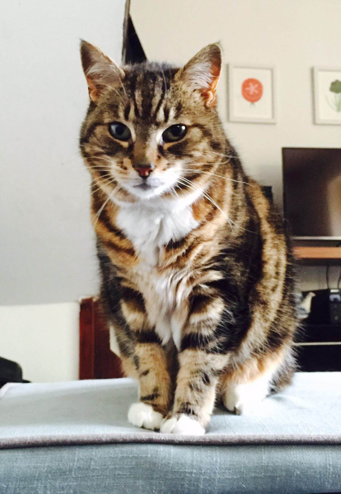

Saturday 16th December – 18.00
TBC, Skipton
Feel free to join us for food, drinks and dancing upon your arrival in Skipton.
Sunday 17th December
Utopia, Broughton Hall, Skipton
| 10.30 | Guests arrive |
| 11.00 | Ceremony |
| 11.30 | Drinks and canapes |
| 13.30 | Wedding breakfast |
| 16.00 | Speeches and toasts |
| 17.00 | First dance |
The Ceremony
As you all know we've been organising this day on a rather tight schedule. We can't quite believe that we've managed to get (almost) all of you together at such short notice. Unfortunately adding the availability of registrars into the mix was simply one constraint too many. In the end our priority was to share our celebration with as many of our closest friends and family as possible and for that reason we will be getting legally married in a very small ceremony on November 11th. We'll be making our vows as part of a humanist ceremony at Utopia so that we can officially tie the knot (in our minds at least) with all of you there.
Travel & Accommodation
Skipton is easily reached by car or train. There is plenty of free parking at the wedding venue. If you prefer to travel by taxi we recommend Star Taxis (01756 700505).
We recommend booking accommodation as soon as possible. There are a number of hotels in the centre of Skipton or alternatively the Skipton Travelodge is located close to the wedding venue.
For those returning to London by train on the Sunday evening, the last train departs from Skipton Station at 19.28.
Dress Code
Lounge suits.
We'll be spending some time outside in the evening, so please bring layers to wrap up warm.
Map
😻 Kitty 😻

Kitty Is Truth © Ben Richards